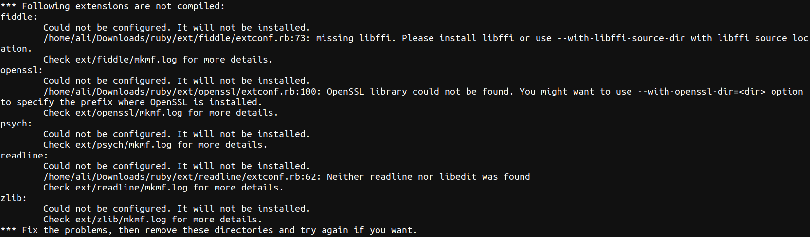

Cross Compilation of Ruby
System Specifications
Build Architecture: x86_64-linux-gnu
Host Architecture: riscv64-unknown-linux-gnu
Operating System for Installation Procedure: Ubuntu 20.04
Pre-requisites
Pre-requisites for installing ruby from source can be installed using the following command
sudo apt-get -y install libc6-dev libssl-dev libmysql++-dev libsqlite3-dev make build-essential libssl-dev libreadline6-dev zlib1g-dev libyaml-dev
Other than this, ruby itself is needed for building ruby from source.
sudo apt install ruby
There is another thing which needs to be taken care of before building ruby from source. If ruby is installed on system itself using apt, then cross compiling ruby will end up in an error as shown in the image below. This error is seen in ruby 2.7.0p0 (2019-12-25 revision 647ee6f091) [x86_64-linux-gnu].

To tackle this issue, one workaround is to install build ruby for native system, then delete ruby which was installed through apt. This procedure will be added in the Build section.
Getting source code
Source code of ruby can be obtained from github repository using the command below:
git clone https://github.com/ruby/ruby.git
Build
Installing ruby for native architecture
Before cross-compiling, one must install ruby from source on the native machine which will solve the error described in Pre-requisites section above.
- (THIS STEP IS STRONGLY RECOMMENDED !)In the source directory, create a folder with any name in which
Makefilewill be generated otherwise there will be a lot of files made in the source directory (possibly create copy of repo directory). - In the source directory of ruby run following command to generate
configurefile.
./autogen.sh
- After this, run the following
configurecommand to generateMakefile.
../configure --prefix=$PREFIX #$PREFIX is where you want to install binary files at the end, so replace it.
- After the above command is completed, run following command to start the build
make -j$(nproc) #-j$(nproc) uses parallelism for make
- After the above command is complete, run following command to install the binaries on the specified path mentioned in
--prefixabove
make install
- Now ruby should be available in the
$PREFIXpath (also in the.bashrc). Add $PREFIX path to $PATH variable and uninstall the the ruby installed usingaptotherwise, the source will keep using that one for building and the error will persist.
sudo apt purge ruby
Cross-Compiling Ruby for riscv64-unknown-linux-gnu
- After the ruby installed using
aptis uninstalled from the system, clean the working directory with following command.
make clean
- After cleaning the working directory, generate the
Makefileagain for cross-compiling ruby forriscv64-unknown-linux-gnutarget and host using the command below
../../configure --prefix=$PREFIX --build=x86_64-linux-gnu --host=riscv64-unknown-linux-gnu --target=riscv64-unknown-linux-gnu
- After the above command is successful, start build with following command
make -j(nproc)
- Install the binaries in path mentioned with
--prefixabove with following command
make install
- After this process, ruby will be installed inside
$PREFIX/directory.
Note: Currently, this process (as checked on version 3.1.2) installs ruby without extensions shown in the following image
